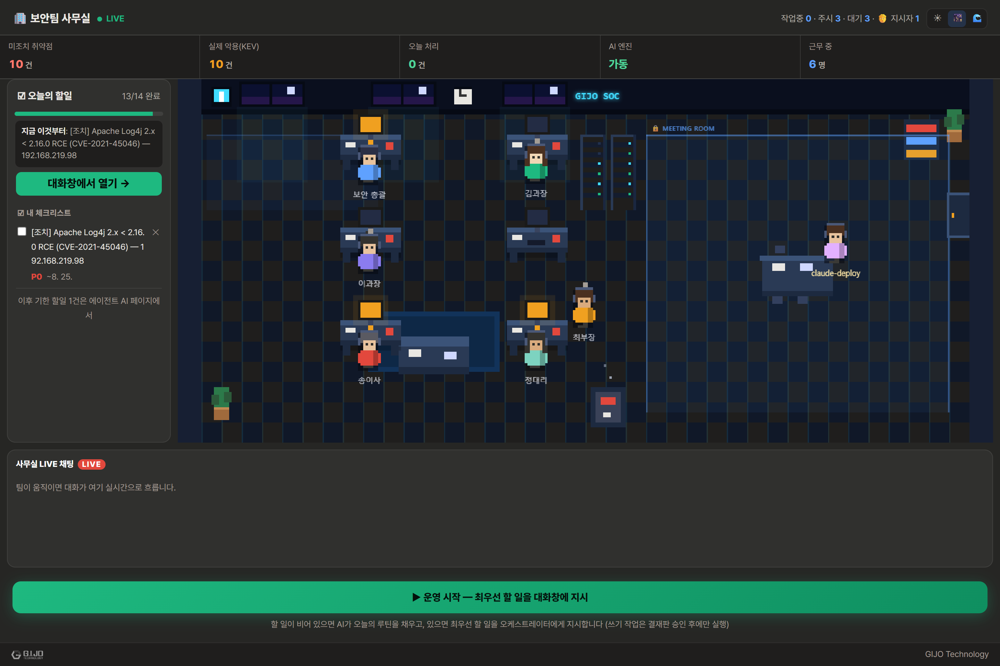
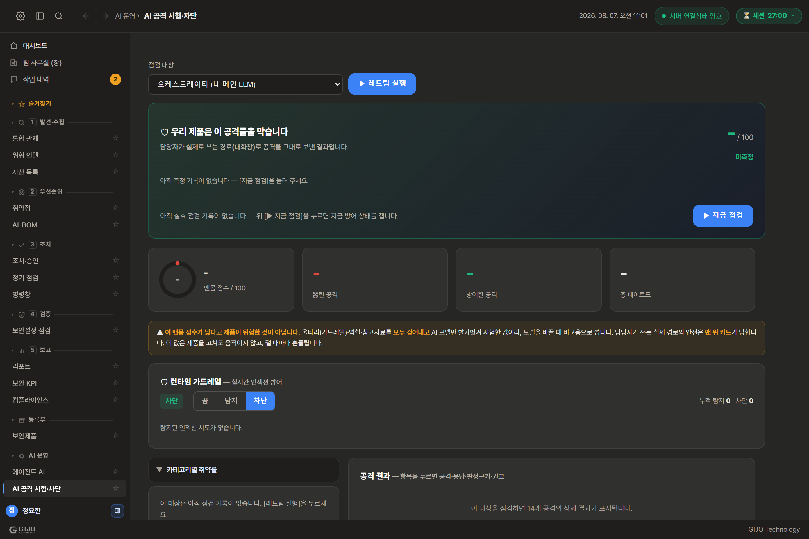
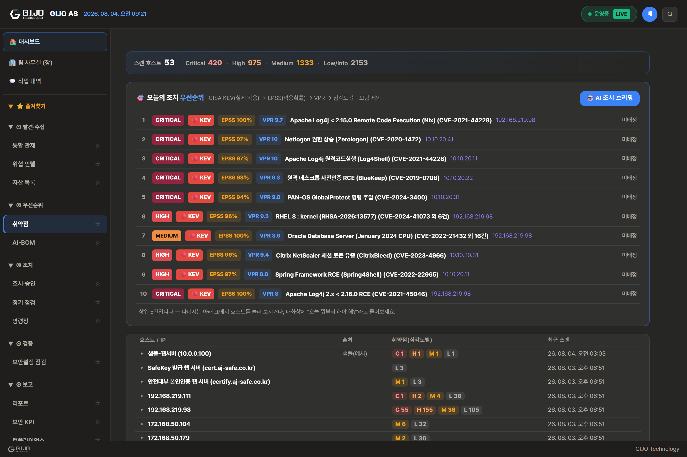
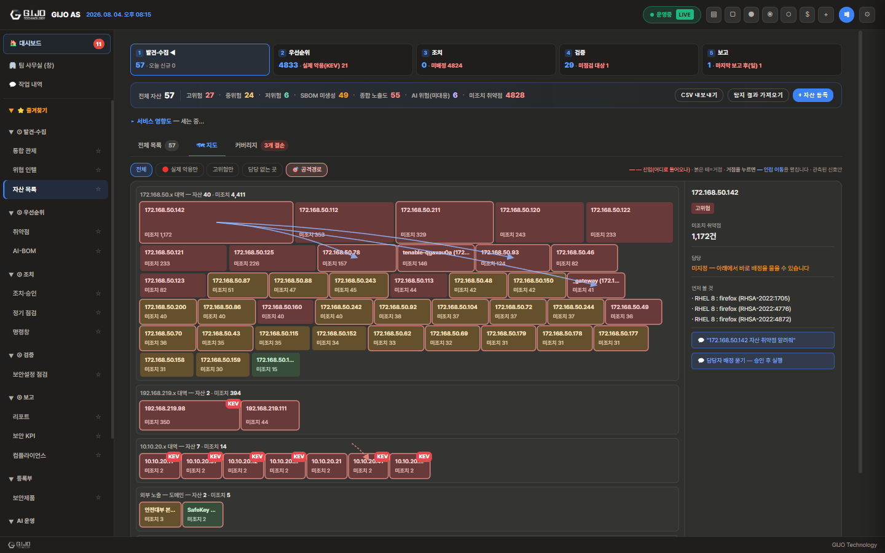
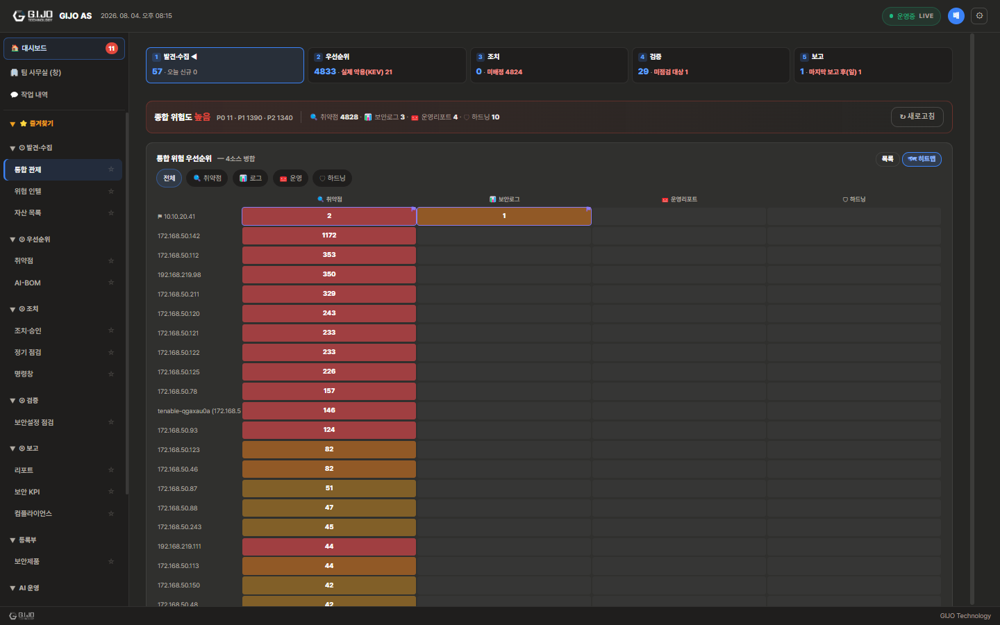
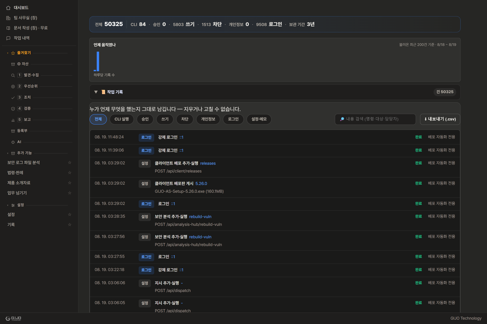

GIJO AS 제품소개서
보안담당자가 채팅으로 지시하면, 사내에 설치된 AI 팀이 알아서 나눠 일하고 보고서까지 올립니다.
- 경영진 3분 요약
- 왜 필요한가 — 보안담당자의 현실
- GIJO AS는 무엇인가 — 제품의 목적
- 경쟁 제품에 없는 두 가지
- 하루가 이렇게 달라집니다 — 4대 시연 시나리오
- 시장에서 GIJO AS의 자리
- 제품 구조 (아키텍처)
- AI는 어떻게 똑똑하고, 어떻게 안전한가
- AI가 우리 데이터를 만지는 규칙
- 주요 기능 한눈에
- 사용 기술 (기술 스택)
- 보안 제품답게, 자기 자신부터 단단합니다
- 공공기관 도입 — N2SF 대응
- 제품 라인업과 요구 사양
- 자체 측정 숫자와 정직한 성숙도
- 솔직하게 — 지금 되는 것과 앞으로 되는 것
- 부록: 용어 풀이
- 4주 파일럿 플랜 · 다음 단계
1. 경영진 3분 요약
문제. 보안팀 인력은 늘 부족한데, 다뤄야 할 정보는 계속 늘어납니다 — 취약점 스캐너 결과, 보안장비 로그, 위협 정보, 보안제품 운영 리포트가 따로따로 도착하고, 그것들을 연결해 "지금 무엇이 위험한가"를 판단하는 일은 결국 담당자의 머릿속에서 수작업으로 이뤄집니다. 여기에 이제 사내 AI 모델·AI 공급망까지 관리 대상에 추가되었습니다.
해법. GIJO AS는 보안 업무를 사람 대신 나눠 맡는 8명의 AI 팀입니다. 담당자가 채팅창에 평소 말하듯 지시하면("이 시스템 점검하고 보고서까지 만들어줘") AI 팀장이 지시를 이해해 각 분야 담당 AI에게 일을 나누고, 결과를 취합해 돌려줍니다. 흩어진 보안 정보는 제품이 자동으로 연결(상관분석)해 "위협 → 영향받는 자산 → 영향받는 업무 서비스"까지 한 번에 보여줍니다.
결정적 차별점. 이 모든 AI 연산이 귀사 서버 안에서만 돌아갑니다. 시중 AI 보안 서비스 대부분이 외부 클라우드로 데이터를 보내야 동작하는 것과 달리, GIJO AS는 AI 두뇌 자체가 사내 GPU 서버에 설치됩니다. 인터넷이 끊긴 폐쇄망에서도 전 기능이 동작하며, 금융·공공·방산처럼 데이터 반출이 금지된 환경에서 "AI를 쓰려면 데이터를 밖으로 보내야 하는" 역설을 없앱니다.
데이터·프롬프트
보안 AI 에이전트
(취약점·로그·리포트·설정점검)
통과 (실측)
① 데이터도 AI도 회사 밖으로 나가지 않습니다 (완전 온프레미스, 에어갭 봉인 지원).
② 대시보드가 아니라 일하는 AI 팀을 드립니다 (자연어 지시 → 실제 업무 수행).
③ 흩어진 보안 정보를 자동으로 엮어 "지금 무엇부터"를 바로 보여줍니다.
④ 경쟁 제품에 없는 두 가지가 있습니다 — 보안팀 인수인계와 행동 대조(4장).
한 가지 더 — 과장하지 않습니다. 현재 제품 성숙도는 "파일럿 투입 가능, GA 미판정"입니다. 코드로 닫을 수 있는 필수 항목은 전부 실측으로 통과했고, 남은 것은 외부 모의해킹· 법무 검토·실사용 4주·인증처럼 코드로 닫을 수 없는 관문입니다(15장). 못 하는 것은 못 한다고 적어 두었으니, 그 부분부터 확인해 주셔도 좋습니다.
2. 왜 필요한가 — 보안담당자의 현실
기업 보안담당자는 항상 인원이 부족한데, 처리해야 할 일과 받는 정보는 계속 늘어납니다.
| 현실의 고충 | 무엇이 힘든가 |
|---|---|
| 보안제품 운영·관리 | 패치·설정 확인·장애 대응·발견 문제 전달을 사람이 일일이 추적 |
| 쏟아지는 보안 정보 | 제품 로그, 위협 정보(CTI), 취약점 스캔 결과가 따로따로 도착 |
| 정보 간 대조가 수작업 | "이 위협이 우리 어느 자산에?", "이 자산 문제가 어느 서비스에?"를 눈으로 매칭 |
| 반복되는 보고 | 임원·팀장 보고서, KPI를 매번 손으로 취합 — 보고서 때문에 야근 |
| AI 보안까지 추가 | 사내 AI 모델·AI 공급망까지 새 관리 대상. 외부 무료 AI에 사내 정보를 붙여넣는 직원들도 걱정거리 |
| 규제·실사 요구 증가 | 소프트웨어 자재명세서(SBOM) 제출 요구가 공급망 실사·공공·금융 심사에서 점점 흔해짐 |
3. GIJO AS는 무엇인가 — 제품의 목적
한 줄 정의: AI 자산·취약점·위협 정보·보안장비 운영·컴플라이언스를 하나의 폐쇄망 플랫폼에서 다루고, 보안 특화 AI 에이전트 팀 + 로컬 LLM이 담당자의 업무를 대신 수행·상관분석하는 온프레미스 보안 운영 통합 제품입니다.
데이터 주권 — 나가지 않음
분석하는 AI 자체가 사내 GPU에서 도는 개방형 모델. 대화·문서·학습·보고서 전 과정이 조직 내부에서 완결됩니다. 폐쇄망·에어갭에서도 전 기능 동작.
자동 상관 — 정보를 엮음
위협 정보 → 영향 자산 → 영향 업무 서비스, 스캔 취약점 → 승인 검토 → SBOM 반영. 담당자가 눈으로 하던 대조를 제품이 자동으로 연결합니다.
쓸수록 똑똑해짐 — 안전하게
사내 문서를 AI의 장기 기억(RAG)에 넣고, 현장에서 쌓인 문답으로 분야별 전문가를 길러냅니다. 단, 품질 검증(평가 게이트)을 통과해 사람이 채택해야만 반영됩니다.
담당자가 매일 하던 일 → GIJO AS가 대신
| 담당자의 수작업 (기존) | GIJO AS 자동화 | 자연어 지시 예시 |
|---|---|---|
| 스캐너 리포트 수백 건을 눈으로 정렬해 "뭐부터?" 판단 | 전 자산을 가로질러 실제 악용 여부(KEV)·악용 확률(EPSS)로 우선순위 자동 산정 | "오늘 뭐부터 조치해야 해?" |
| 취약점마다 담당자·기한을 수기 배정 | 담당자·기한 자동 배정 (결재판 승인 후 실행) | "가장 급한 취약점 담당자랑 기한 배정해줘" |
| 아침마다 상황을 손으로 취합 | 오늘의 보안 브리핑 즉석 생성 | "오늘 브리핑 해줘" |
| 위협 정보가 어느 자산·서비스에 영향인지 눈으로 대조 | 위협 → 자산 → 서비스 자동 상관 | "이 위협 우리 어느 자산에 영향?" |
| 주간·임원 보고서를 매번 손으로 작성 | 보고서 자동 생성(워드 문서) + 메일 발송 | "주간 보안 리포트 작성해줘" |
| 보안장비 설정을 수동 점검 | 국내 기준(KISA U-시리즈)+국제 기준(CIS) 설정 점검 실행·리포트 | "이 서버 하드닝 점검해줘" |
| "조치했다는데 실제로 고쳐졌나?" 수동 재확인 | 재스캔으로 해결 여부 자동 검증 | (조치 보고 → 재스캔 → 완료 자동 확정) |
위 지시문은 실제 제품에서 동작하는 명령입니다. 비슷한 표현이 와도 같은 기능으로 처리됩니다.
4. 경쟁 제품에 없는 두 가지
온프레미스라는 것만으로는 충분한 이유가 되지 않습니다. GIJO AS에는 2026년 7월 시장 조사에서 국내외 경쟁 제품에서 찾지 못한 기능이 두 가지 있습니다. 이 둘은 시간이 지날수록 고객사 안에 지식이 쌓여 옮기기 어려워지는, 제품의 진짜 자산이기도 합니다.
보안팀 인수인계 — 퇴사자의 머릿속을 남깁니다
방화벽을 5년 맡던 담당자가 떠나고 후임자는 경력 1년. 이때 사라지는 것은 문서가 아니라 장비 요령·오탐 사연·연락처 같은 머릿속 지식입니다.
GIJO AS는 이것을 4단계 마법사로 받아 적습니다. 핵심은 3단계입니다 — 문서를 올렸다고 끝내지 않고, AI가 문서마다 검증 질문을 만들어 실제로 물어본 뒤, 그 문서가 근거로 인용되는지 판정합니다. "올려는 놨는데 쓸모가 있는지 모르는" 상태를 없앱니다.
후임자는 대화창에 물어보는 것만으로 전임자의 지식을 근거 문서와 함께 넘겨받습니다. 이관 리포트(통과율·이관자·일시)는 퇴사 후 분쟁에 대비하는 감사 증적이 됩니다.
조사에서 보안팀 특화 인수인계 제품은 국내외에서 찾지 못했습니다(일반 인사 오프보딩 제품뿐).
행동 대조 — "이거 해도 돼?"에 근거로 답합니다
담당자가 접속기록 보관 주기를 6개월로 줄이려 합니다. 사규와 법이 뭐라는지 지금 알아야 합니다.
대화창에 그대로 물으면 사내 규정 문서만을 근거로 ○/△/× 판정과 규정 원문 발췌를 내놓습니다. 발췌는 AI가 옮겨 쓰는 것이 아니라 코드가 원문을 그대로 오려 붙이므로 왜곡되지 않습니다.
근거가 없으면 판정하지 않습니다. 규정 문서가 없는 주제에는 "판단 불가 — 근거를 찾지 못했습니다"라고 답하고, 그 규정을 올리는 순간부터 답하기 시작합니다. 이 정직함이 설계입니다.
같은 사안을 다시 물으면 지난 판정을 함께 보여 주되 판정은 매번 새로 합니다(규정이 바뀌면 답도 바뀌어야 하므로 저장해 두고 재사용하지 않습니다). 판정이 뒤집히면 ⚠로 표시해 규정 개정을 알아차리게 합니다.
사내 규정 대조이며 법률 판단이 아닙니다. 법령은 원문 링크 안내까지만 하며 법률 자문이 아닙니다.
5. 하루가 이렇게 달라집니다 — 4대 시연 시나리오
아래 네 가지는 실제 시연 대본입니다. 모든 지시문은 운영 서버에 실제로 던져 응답을 확인한 것만 실었습니다(각 5분, 전체 22~25분).
| 시나리오 | 상황 | 담당자가 하는 말과, 제품이 하는 일 |
|---|---|---|
| ① 혼자 남은 월요일 아침 인력 부족·업무 과다 |
담당자 2명 중 1명이 휴가. 스캐너 리포트는 쌓였고, 오늘 뭐부터 볼지 정하는 것부터가 일입니다. | 앱을 열면 아무것도 누르지 않았는데 브리핑이 먼저 와 있습니다. "오늘 뭐부터 볼까?"라고 물으면 실제 악용(KEV)→악용 확률(EPSS)→위험도(VPR) 순으로 줄을 세워 답합니다 — 감이 아니라 기준입니다. "미조치 취약점 알려줘"에는 담당자가 지정되지 않은 건을 막힌 지점으로 짚어 줍니다. |
| ② 퇴사자의 머릿속을 남기다 차별화 1호 |
방화벽 담당 5년 차가 다음 달 퇴사. 후임자는 보안 경력 1년. | 4단계 마법사로 지식을 받아 적고 AI가 검증 질문으로 실제 물어봐 쓸모를 판정합니다. 후임자가 "ASA 106023 로그가 한 IP에서 계속 올라오는데 무슨 의미야?"라고 물으면 전임자가 남긴 문서를 근거(📄)로 붙여 답합니다. |
| ③ 이거 해도 되나? 차별화 2호 |
개인정보 시스템 접속기록 보관 주기를 바꾸려 합니다. | "접속기록 보관 기간 규정 알려줘" → 사내 규정을 근거로 기준·점검 주기까지. "보관 주기를 6개월로 줄여도 돼?" → 규정 원문 발췌와 함께 판정. 규정 문서가 없는 주제("USB 반출 정책 완화해도 돼?")에는 지어내지 않고 "판단 불가"라고 답합니다. |
| ④ 보고가 저녁을 먹어치우지 않게 상급자 보고 |
금요일 16시, 팀장이 "주간 현황 정리해서 올려줘". | "이번 주 한 일 정리해줘" → 처리 건수와 사람이 했다면 걸렸을 시간까지 즉답. "내부 검토용 주간 리포트 작성해줘" → 요약과 함께 워드 문서가 실제로 만들어집니다. 매주 월요일 아침 자동 생성도 이미 돌고 있습니다. |


6. 시장에서 GIJO AS의 자리
AI 보안 시장은 크게 다섯 갈래입니다 — ① AI 보안 태세 관리(AI-SPM), ② LLM 방화벽·가드레일, ③ 모델 스캐닝·AI 공급망, ④ AI 레드팀, ⑤ 온프레미스·주권형 AI. 글로벌 대표 제품 대부분은 클라우드 서비스 전제 + 한 가지 문제만 푸는 전문 제품이며, 분석을 위해 데이터(때로는 프롬프트 원문까지)를 자사 클라우드로 보냅니다.
| 항목 | GIJO AS | 클라우드 AI-SPM | LLM 방화벽 | 모델 보안 |
|---|---|---|---|---|
| 배포 | ✅ 완전 온프레미스/에어갭 | 클라우드 중심 | SaaS/API 중심 | CI/CD·클라우드 |
| 데이터 유출 | ✅ 없음(폐쇄망 완결) | 자사 클라우드로 전송 | 프롬프트를 API로 전송(대개) | 스캔 결과 클라우드 |
| 분석용 AI | ✅ 로컬 GPU 개방형 모델(고객 선택) | 벤더 클라우드 | 벤더 클라우드 | 벤더 클라우드 |
| 전통 취약점관리 | ✅ 통합(KEV/EPSS/VPR) | 인접 | ✕ | ✕ |
| AI 팀 자동 업무수행 | ✅ 자연어 지시 → 실행 | ✕(대시보드) | ✕ | ✕ |
| 국내 정합(한국어·KISA) | ✅ 특화 | 영어·글로벌 우선 | 영어 우선 | 영어 우선 |
7. 제품 구조 (아키텍처)
7.1 시스템 구성 — 3계층, GPU 서버 한 대로 완결
7.2 질문 하나가 답이 되기까지 — AI 데이터 흐름
7.3 자동 상관 — 위협이 도착하면 벌어지는 일
7.4 메뉴가 곧 업무 순서 — 절차 5단계
메뉴를 데이터 창고가 아니라 일하는 순서로 세웠습니다. 취약점 업무 한 바퀴가 ① 발견·수집 → ② 우선순위 → ③ 조치 → ④ 검증 → ⑤ 보고 다섯 허브 화면으로 이어지고, 각 허브의 위쪽 띠에서 현황을 한눈에 본 뒤 판을 누르면 해당 화면이 열립니다. 지시는 대화창 한 곳에서만 받고, 화면은 보여 주는 일만 합니다 — 오조작과 이중 입력 창구를 없앤 설계입니다.
8. AI는 어떻게 똑똑하고, 어떻게 안전한가
8.1 장기 기억 (RAG) — 회사 문서가 AI의 지식이 됩니다
보안제품 매뉴얼·사내 규정·점검 절차서를 올리면 AI의 지식 저장소에 쌓이고, 이후 모든 답변의 근거로 쓰입니다. 검색은 두 갈래를 합쳐 정확도를 높입니다.
- 의미 검색 — "방화벽 점검 어떻게 해?" 같은 말뜻으로 찾습니다.
- 글자 검색 —
CVE-2024-1234·U-01같은 코드를 글자 그대로 정확히 찾습니다.
8.2 지식 인입 관문 — 쓰레기가 지식이 되지 않게
지식 저장소는 넣을 때 지킵니다. 검색할 때 걸러 내는 것만으로는 늦기 때문입니다.
| 관문 | 무엇을 막나 |
|---|---|
| 글자 꺼내기 | PDF·한글(HWP)·오피스 문서를 전용 추출기로 읽습니다. 못 읽는 문서가 "읽힌 척" 저장되는 일을 막습니다. |
| 조각 위생 | 사람이 읽을 수 없는 조각(깨진 글자·인코딩 덩어리)은 저장 전에 버립니다. |
| 인입 품질 판정 | 걸러 낸 뒤 남은 내용이 거의 없으면 성공한 척하지 않고 그 자리에서 오류로 알립니다. |
| 숨은 지시문 차단 | 외부에서 받은 문서에 심긴 조종 문장(문서 한 줄이 AI 행동을 바꾸는 공격)을 차단합니다. |
8.3 온톨로지 — 보안 표준끼리의 관계망
문서 검색과 별개로, 6대 보안 표준(KISA·MITRE ATT&CK·ATLAS·OWASP·NIST·CWE)의 코드 약 2,000개 관계를 그래프로 내장합니다. RAG가 "이 내용이 어디 적혀 있나"를 찾는다면, 온톨로지는 "이 코드가 저 표준의 무엇과 이어지나"를 답합니다. 설치 직후부터 들어 있고, 지식 묶음에는 "언제 기준인가" 버전이 붙어 폐쇄망에서도 파일 하나로 갱신됩니다 (전자 서명이 맞지 않으면 반입 거부 — 가짜 지식 공급망 공격 방어).
8.4 전문가 어댑터 — 우리 현장의 문답으로 전문가를 길러냄
AI 팀은 베이스 모델 하나 + 분야별 전문가 어댑터 구조입니다. 주제(취약점·장비운영· 사내규정·위협대응)별로 승인된 문답이 300건을 넘으면 그 분야 어댑터를 학습합니다.
8.5 AI 두뇌는 고객이 고릅니다 (BYOM) — 맞추는 일은 제품이
AI 모델(두뇌)은 고객이 직접 올릴 수 있습니다. 라이선스·성능·한국어 취향을 고객이 정하면, 그 모델을 서버 환경에 맞추는 일은 제품이 자동으로 합니다 — 파일 속 정보를 읽어 모델의 버릇 (예: 답하기 전에 속으로 길게 생각하는 습관)을 알아보고 조정하며, 올린 직후 4가지를 즉석 시험합니다: 답이 나오는지 · 한국어로 답하는지 · 지시를 따르는지 · 위험한 요청을 거절하는지. 보안 특화 모델 두 개를 하나로 합성(SLERP)해 쓰는 것도 지원합니다.
8.6 3중 방어 — AI 제품의 가장 알려진 공격을 세 지점에서 막습니다
AI 제품에서 가장 알려진 공격은 프롬프트 주입(AI에게 몰래 다른 명령을 심는 것)입니다. 한 곳만 막으면 다른 곳으로 들어오므로 세 지점에 겹쳐 두었습니다.
| 지점 | 무엇을 막나 | 기본값 |
|---|---|---|
| ① 입구 — 가드레일 | 담당자가 입력한 말에 섞인 공격 시도를 실시간 탐지·차단하고 기록합니다. | 차단(켜짐) |
| ② 자료 — 문서 살균 | 밖에서 받은 문서에 숨겨진 지시문. 벤더 매뉴얼·협력사 산출물에 심어 둔 명령이 우리 AI를 조종하는 것을 막습니다. | 항상 |
| ③ 출구 — 자격증명 가림 | 비밀번호·API 키가 리포트 파일이나 외부로 나가는 것을 막습니다. | 항상 |
③의 선 긋기. 화면에서 담당자가 보는 것은 가리지 않습니다 — 그 문서를 볼 권한이 있는 분이고, 다 가리면 "매뉴얼을 물어봐도 안 알려주는 제품"이 되기 때문입니다. 되돌릴 수 없는 경로(파일 저장·외부 전송)에서만 가립니다.
- 자동 레드팀 — 프롬프트 인젝션·탈옥 등 공격 문장으로 우리 AI를 정기적으로 흔들어 보고, 뚫린 곳을 점수로 기록합니다.
- 개인정보 가림 — 대화창에 붙여 넣은 주민등록번호·카드번호는 AI에 닿기 전에 가려지고, 가렸다는 사실이 기록에 남습니다. 업무에 필요한 IP·호스트명은 건드리지 않습니다.

8.7 밖과 이어지는 통로 — 전부 기본 꺼짐
폐쇄망 운영이 기본입니다. 아래는 켜야만 동작하며, 켜는 것은 관리자만 할 수 있고 기록이 남습니다. 보안성 검토에서 가장 많이 확인하시는 대목이라 전부 적습니다.
| 통로 | 무엇 | 기본값 |
|---|---|---|
| 클라우드 AI | 내부 정보가 없는 일반 질문만 외부 AI에 보조 질의 | 꺼짐 |
| SIEM 전달 | 보안 이벤트를 고객사 SIEM으로 전송 | 꺼짐 |
| 메일(SMTP) | 리포트·알림 발송 | 꺼짐 (사내 메일 서버 지정 시 동작) |
| 위협 인텔 피드 | 외부 위협 정보 수집 | 꺼짐 |
| 법령 조회 | 국가법령정보 최신 법령·시행령 원문 링크 | 꺼짐 (선택 사항 — 끄면 완전 폐쇄) |
| MCP 도구 연동 | 외부 도구 연결 | 꺼짐 · 현재는 연결 정의와 승인 체계만 동작하며, 실제 외부 연결은 준비 중입니다 |
클라우드 AI를 켜더라도 자산명·사설 IP·담당자 이름·자격증명이 섞인 질문은 자동으로 차단됩니다. 사내 문서(RAG) 내용은 애초에 실어 보내지 않습니다. 나간 사실은 전부 기록에 남습니다.
에어갭 봉인 — "안 나갑니다"를 켜서 증명
봉인을 켜면(기밀·방산 배치용) 위 통로들이 한 관문에서 통째로 막힙니다. 기본은 거부 — 확실히 사내로 확인된 곳만 통과시키고 애매하면 막습니다. 막힌 시도는 작업 기록에 남고, 대화창에 "에어갭 상태"라고 물으면 막힌 통로와 각각의 대체 수단을 그 자리에서 보여줍니다. 위협 정보·취약점 목록 갱신은 서명된 지식 번들 파일로 오프라인 반입합니다.
9. AI가 우리 데이터를 만지는 규칙
보안성 검토에서 가장 많이 받는 질문입니다 — "AI가 멋대로 지우거나 바꾸면 어떡하나?" GIJO AS의 답은 기능이 아니라 구조입니다.
| 규칙 | 내용 |
|---|---|
| 도구를 통해서만 | AI는 데이터베이스를 직접 만지지 못합니다. 정해진 도구 목록을 통해서만 조회·변경합니다. |
| 조회와 변경을 나눔 | 조회는 바로 실행되지만, 변경(등록·수정·삭제)은 실행되지 않습니다. |
| 결재판 승인 | 변경이 필요하면 AI가 값을 채운 확인창을 띄웁니다. 사람이 그 값을 보고 승인해야 실행됩니다. |
| 되돌리기 | 실행된 변경은 한 번의 클릭으로 되돌릴 수 있습니다. |
| 전부 기록 | 누가·언제·무엇을 했는지 작업 기록에 남습니다. 끌 수 없습니다. |
10. 주요 기능 한눈에
| 기능 | 담당자에게 실제로 달라지는 것 |
|---|---|
| 🤖 AI 팀 + 복합 지시 | 8종 역할 분담 에이전트(팀장·스캔·침투테스트·분석·SBOM·위협정보·리포트·모델진화). "CTI 영향 자산 스캔하고 리포트까지" 한 문장이면 여러 단계를 순서대로 자동 실행 |
| 🎯 위협↔자산 자동 매칭 | 위협 정보의 대상을 자산 식별자와 자동 대조 — 눈 대조 작업 소멸, 무관한 위협은 오탐 없이 제외 |
| 🔗 서비스 영향도 | 자산을 업무 서비스로 묶어 위험을 합산 — "지금 위험한 서비스"를 임원에게 바로 설명 |
| 🛡 취약점 생애주기 관리 | Nessus 결과(원본 XML·CSV·HTML) 그대로 업로드 → 중복 제거(실측 1,171행→282건) → 실제 악용(KEV)·악용 확률(EPSS) 우선순위 → 담당자·기한(SLA) 조치 → 재스캔 검증 → 위험 감소 추세 |
| 🗺 보안 지형도(지도) | 목록 대신 지도로 — 칸=대상, 색=위험, 공격 경로(진입→거점→인접)를 화살표로 겹쳐 "어디로 들어와 어디까지 번지나"가 한눈에 |
| 📡 통합 관제(보안 분석) | 취약점 스캐너·보안 로그·보안제품 운영리포트·설정 점검 4갈래를 한 자리에 모아, 같은 자산이 여러 곳에서 걸리면 짚어 줌 |
| 🧰 보안제품 관리 | 방화벽·EDR·DLP 등 종류별 등록, 매뉴얼 일괄 업로드(자동 분류) → AI가 학습해 답변에 활용, 점검 일정·승인 거버넌스 연결 |
| 📦 AI-BOM · SBOM | AI 자산 5영역(모델·데이터·프롬프트·도구·인프라) 명세 + 국제 표준(CycloneDX·SPDX) 자재명세서를 버튼 한 번에 — 규제·실사에 그대로 제출 |
| 🖥 하드닝 점검 · 원격 정기점검 | 보안장비 설정을 국내 KISA U-시리즈+국제 CIS 기준으로 점검. SSH 원격 대상 등록 → 스케줄 자동 점검·악화 알림 |
| 📊 통합 KPI + 임원 보고서 | 번다운·SLA 준수율·KEV 추세를 한 화면에, 매일 스냅샷으로 추세 축적. 임원 보고서(워드)를 AI가 작성해 메일 발송. "AI가 아낀 시간"도 보수적으로 환산해 자동 포함 |
| 🧾 보안 로그 분석 | 올린 로그의 이벤트 유형(브루트포스·포트스캔 등)에 KISA 기준 대응 절차가 붙고, 로그에 등장한 미등록 내부 IP를 체크 한 번에 자산 등록 |
| 🤝 업무 넘기기(인수인계) 차별화 1호 | 4단계 마법사로 지식을 받아 적고, AI가 검증 질문으로 실제 물어봐 그 문서가 근거로 쓰이는지 판정. 이관 리포트는 감사 증적이 됨(4장 참조) |
| ⚖ 행동 대조 차별화 2호 | "이거 해도 돼?"에 사내 규정 원문 발췌와 함께 ○/△/× 판정. 근거가 없으면 판정하지 않음. 지난 판정을 함께 보여 주되 판정은 매번 새로 함(4장 참조) |
| 🧭 어디서든 지시 + 감사 기록 | 어느 화면에서든 작업 콘솔을 열어 지시(현재 화면 맥락 자동 전달). 모든 실행·승인·차단·변경이 감사 로그 단일 타임라인에 남음 |
| 🔌 MCP 연동 준비 중 | 외부 도구·데이터를 표준 프로토콜로 연결하기 위한 승인 체계·에이전트별 허용 매트릭스·감사 구조는 완성되어 있으나, 실제 외부 연결은 아직 동작하지 않습니다(연결 정의만 저장). 로드맵 항목입니다 |



11. 사용 기술 (기술 스택)
전부 폐쇄망에서 완결되는 기술로 골랐습니다 — 외부 클라우드 서비스에 기대는 부품이 없습니다.
| 영역 | 기술 | 역할 — 쉽게 말하면 |
|---|---|---|
| 담당자 앱 | Electron · TypeScript | 윈도우·맥에 설치되는 데스크톱 프로그램. 화면과 입력만 담당하고 데이터는 갖지 않습니다 |
| REST + WebSocket 실시간 채널 | 서버와의 통신. 변화가 생기면 새로고침 없이 전 담당자 화면이 즉시 갱신됩니다(7개 실시간 채널) | |
| 서버 | Node.js · Express | 제품의 두뇌 본부. 인증·AI 지휘·상관분석·거버넌스를 모두 처리합니다 |
| SQLite (내장 데이터베이스) | 자산·취약점·점검·감사기록을 저장. 별도 DB 서버 설치가 필요 없어 폐쇄망 구축이 단순해집니다 | |
| JWT 인증 · bcrypt 해시 | 담당자별 로그인. 접속 권한이 자동 만료·갱신되어 탈취된 인증 정보가 오래 살아남지 못합니다 | |
| AES-256-GCM 암호화 | 연동 서비스의 API 키·메일 비밀번호를 군용급 방식으로 암호화 저장 — 평문 저장이 없습니다 | |
| AI 엔진 | llama.cpp (로컬 LLM 서빙) | 개방형 AI 모델을 사내 GPU에서 돌리는 엔진. 여러 모델을 GPU 메모리 예산에 맞춰 자동 교대합니다 |
| LanceDB + BGE-M3 임베딩 | AI의 장기 기억. 문서를 의미 단위로 저장하고 검색합니다(다국어 지원) | |
| QLoRA 어댑터 학습 | 현장 문답으로 분야별 전문가 어댑터를 굽는 학습 기술. 단일 GPU에서도 학습이 가능합니다 | |
| ModelScan | AI 모델 파일 속 악성코드·위험 요소를 실행 없이 정적으로 검사합니다 | |
| 문서·표준 | CycloneDX · SPDX-2.3 | 국제 표준 소프트웨어 자재명세서(SBOM) 생성 — 규제·실사에 그대로 제출 가능한 형식 |
| docx 생성 + SMTP 메일 | 임원 보고서를 워드 문서로 만들어 메일로 발송합니다 | |
| PDF·HWPX 텍스트 추출기 | 매뉴얼·규정 문서(PDF·한글 파일 포함)에서 글자를 안전하게 꺼내 AI 지식으로 만듭니다 | |
| 연동 | MCP (Model Context Protocol) | AI를 외부 도구에 연결하는 업계 표준 — 기본 꺼짐·관리자 승인제로 온프렘 원칙을 지키며 확장합니다 |
운영 품질
- 자동 품질 시험 2,748개를 통과한 버전만 배포합니다. 실제 구동 환경에서 처음부터 끝까지 검증합니다.
- AI 답변 품질은 고정 질문 회귀 시험과 평가 게이트(3축: 업무 정확도·안전 경계·한국어 품질)로 재고, 하나라도 나빠지면 그 변경을 채택하지 않습니다.
- 매일 새벽 자동 회귀 측정(147개 실전 상황 재연)으로 품질 하락을 그날 잡아냅니다.
12. 보안 제품답게, 자기 자신부터 단단합니다
- 계정 보안 — 업계 표준 인증(자동 만료·갱신되는 토큰), 로그인 무차별 대입 방어, 비밀번호 정책, 계정당 동시 세션 1개 강제. 폐쇄망에서도 동작하는 2차 인증(TOTP) 지원 — 인터넷 없이 휴대폰 인증앱 6자리로 인증합니다.
- 저장 암호화 — 데이터베이스를 AES-256으로 잠글 수 있습니다(선택). 켜면 DB 파일이나 백업본을 통째로 가져가도 열지 못합니다. 암호화 열쇠는 고객사 서버에서 만들어져 그 기계에 보관되며, 공급사는 알지 못합니다.
- 비밀정보 암호화 — 연동 서비스 비밀번호·API 키는 전부 암호화된 상태로만 저장하며 평문 저장이 없습니다.
- 안전 기본값 강제 — 운영 환경에서 보안 설정을 기본값 그대로 두면 시스템이 아예 기동을 거부합니다. "설정을 깜빡한 채 조용히 운영되는" 사고를 구조적으로 차단합니다.
- 감사 추적 — 모든 실행·승인·차단·변경이 작업 기록에 남습니다. 기본 3년 보관하고 오래된 것만 자동 정리하며, 정리했다는 사실도 기록에 남깁니다.
- 백업과 복원 — 하루 한 번 자동 스냅샷을 만들고 "정말 복구되는가"까지 열어서 확인합니다. 파일이 있다는 것과 복구된다는 것은 다른 말이기 때문입니다.
- 자가 진단 — "지금 이 시스템 괜찮은가"를 담당자가 직접 확인하는 화면. 백업·지식베이스·모델·디스크 상태를 사람 말로 알려줍니다.

13. 공공기관 도입 — N2SF 대응
N2SF(국가 망 보안체계)는 업무 정보를 기밀(C)·민감(S)·공개(O) 세 등급으로 나누고 등급마다 다른 보안 통제를 적용하는 체계로, 2026년 5월 1일 시행되었습니다. 핵심은 기존의 일률적인 망분리 의무 조항이 삭제되고 그 자리를 등급별 차등 통제가 대신한다는 점입니다.
| 등급 | 무엇이 여기 들어가나 | 상용 AI 서비스로 정보 처리 |
|---|---|---|
| 기밀(C) | 비밀·대외비, 안보·국방·외교, 국민 생명·안전, 수사·재판 관련 | 금지 |
| 민감(S) | 감사·감독·인사, 개인정보, 법인 영업비밀 등 | 금지 |
| 공개(O) | 위에 해당하지 않는 나머지 전부 | 가능 |
한 대에 여러 등급을 함께 담아야 할 때 — 자료 단위 등급 라벨
예산·인력·장비 사정으로 등급별 시스템을 따로 두기 어려운 기관이 많습니다. 그래서 GIJO AS는 자료 한 건 단위로 등급을 매기고, 등급이 낮은 담당자에게는 검색 자체가 되지 않게 하는 기능을 갖췄습니다. 한 서버 안에서도 등급별 접근 경계를 지킬 수 있습니다.
※ N2SF는 법률·시행령이 아니라 국가정보원장이 발령하는 지침(행정규칙)입니다. 법 시행과 기관별 전환 완료는 다른 문제이므로, 도입 검토 시 기관의 전환 일정을 먼저 확인하시기를 권합니다. 등급별 배치 상세는 별도 「N2SF 대응 문서」로 제공해 드립니다.
14. 제품 라인업과 요구 사양
라인업은 GPU 메모리에 따른 AI 구동 방식으로 나뉩니다. 세 라인업 모두 소프트웨어와 기능이 완전히 동일합니다 — 기능을 잘라 파는 방식이 아니라, 고객 장비 사양에 맞춰 최적 구성을 제안하는 것입니다.
| AS Lite | AS Standard 권장 | AS Pro | |
|---|---|---|---|
| 권장 GPU | 12GB (RTX 3060 12G·4070) | 24GB (RTX 3090·4090) | 30GB 이상 (RTX 5090·A6000급) |
| AI 구성 | 보안 LLM 1개 + 검색용 임베딩 | 보안 LLM 2개 + 검색용 임베딩 | 보안 LLM 3개 + 검색용 임베딩 |
| 대상 조직 | 1인 보안담당자 · 소기업 | 2~3인 보안팀 · 중견기업 | 3인 이상 팀·관제 · 대기업/공공 |
| 동시 사용자 | 1~2명 | 3~5명 | 5명 이상 |
| AI 역할 분리 | 단일 모델이 전 역할 겸임 | 지휘·전문가 분리 상주 | 지휘·한국어 보안 전문가·리포트 3분업 |
| 응답 특성 | 모델 전환 시 15~30초 대기 | 상주 2종 즉시 응답 | 상주 3종 즉시 응답 |
| 기능 차이 | 없음 — 전 기능 동일 | 없음 | 없음 |
설치에 필요한 것
- 사내 서버 1대 — NVIDIA GPU 12GB 이상(24GB 권장) · Windows(WSL2) 또는 Linux · 인터넷 불필요
- 담당자 PC — Windows 설치본을 더블클릭으로 설치하고 서버 주소만 입력하면 끝. 클라이언트는 서버 자체가 배포처가 되어 외부 서비스 없이 자동 업데이트됩니다.
- 고객 데이터는 서버 밖으로 나가지 않습니다 — 반입은 파일 업로드, 반출은 없습니다.
15. 자체 측정 숫자와 정직한 성숙도
보안 제품은 "좋습니다"라는 말로 팔 수 없습니다. 아래는 전부 자체 측정 결과이며 재현 가능한 것들입니다. 측정 방법은 실제 운영 서버에 요청을 보내 응답을 읽는 방식이지, "구현했다"는 확인이 아닙니다.
| 무엇을 쟀나 | 결과 |
|---|---|
| 보안담당자 실전 질문 150상황 | 최근 회차 141/150 — 남은 불편은 전부 「응답 30초 초과」 한 종류이며 오답은 0건. 매일 밤 자동으로 다시 측정해 품질이 떨어지면 그날 잡아냅니다 |
| AI 주입 공격(프롬프트 인젝션) 14종 | 제품 경로 뚫림 0건 — 입구에서 13건 차단, 모델이 1건 버팀. 방어 코드를 떼어 낸 모델 자체도 71점 |
| 평가 게이트 3축 (라우팅·안전 경계·한국어) | 99문항 전부 통과. 코드를 바꿀 때마다 다시 돌리고, 하나라도 나빠지면 그 변경을 채택하지 않습니다 |
| AI가 아낀 시간 (자체 추정·보수 조정) | 최근 30일 자동 처리 102건 ≈ 사람 45~56시간 |
| 자동 품질 시험 · QA | 시험 2,748개 통과 · 화면·API·회귀 14계층 전 통과 · 백업은 "복구되는지"까지 실제로 열어서 검증 |
코드로 닫을 수 있는 필수 항목(자가 진단·백업복원·저장 암호화·감사 기록·이벤트 생애주기·알림·SIEM 전달)은 7개 전부 실측으로 통과했습니다. 남은 것은 코드로 닫을 수 없는 관문 네 가지입니다 — ① 외부 업체의 모의해킹 점검 ② 번들 AI 모델 라이선스의 법무 검토 ③ 실사용 4주 검증 ④ 인증 취득(보안기능확인서·CC·GS).
그래서 지금 정직한 표현은 "파일럿에 투입할 수 있다"이며, "GA(정식 출시 판정)"라고 말하지 않습니다. 이 판정은 분기마다 다시 측정해 갱신합니다.
16. 솔직하게 — 지금 되는 것과 앞으로 되는 것
지금 됩니다 — 본 문서 10장의 기능 표 전체가 현재 동작 기준입니다. AI 팀 자연어 지시·복합 실행, 보안팀 인수인계(AI 검증 포함), 행동 대조(규정 근거 판정), 위협↔자산↔서비스 자동 상관, 취약점 생애주기(임포트→우선순위→조치→재스캔 검증→번다운), 보안 지형도, 통합 관제 4소스, 보안제품 관리·매뉴얼 학습, AI-BOM/SBOM 표준 내보내기, 하드닝 점검·원격 정기점검, KPI·임원 보고서 자동화, 로그 분석, 감사 로그, 레드팀·가드레일, 개인정보 가림, 에어갭 봉인, 자료 단위 등급 라벨, BYOM·모델 합성, 전문가 어댑터 학습(게이트 통과분만 채택) — 전부 현재 동작합니다.
로드맵으로 확장됩니다 — MCP 외부 도구 실연결(승인·감사 체계는 완성, 연결 동작은 준비 중), 다크웹·딥웹 위협정보 벤더 실시간 연동 확대, 전용 AI 모델 고도화, 발견방식별 조치 검증 세분화, 티켓 시스템(Jira·ServiceNow) 연동, SIEM·장비 커넥터 확대. 도입 후 업데이트로 순차 제공됩니다.
약한 것도 밝힙니다. ① 멀티클라우드 스캔 제품이 아닙니다(온프레미스 자산이 주 대상). ② 프롬프트 공격 탐지 정밀도·모델 포맷 커버리지 같은 단일 축 깊이는 그 축의 전문 벤더가 앞섭니다. ③ 사내 서버에서 도는 개방형 모델(7~14B급)은 클라우드 초대형 모델보다 문장력이 낮습니다 — 그래서 숫자와 판정은 코드가 결정적으로 내고, 모델은 설명만 맡습니다. ④ NVIDIA GPU가 없는 환경은 지원하지 않습니다(14장). ⑤ 현재 성숙도는 "파일럿 투입 가능, GA 미판정"입니다(15장). 과장 없이 말씀드리는 이유는 간단합니다 — 보안 제품은 신뢰가 전부이기 때문입니다.
17. 부록 — 용어 풀이 📖
- 온프레미스 (on-premises)
- 소프트웨어를 클라우드가 아니라 회사 소유 서버에 직접 설치해 쓰는 방식. 데이터가 회사 밖으로 나가지 않습니다.
- 폐쇄망 · 에어갭 (air gap)
- 인터넷과 분리된 사내 전용 네트워크. 에어갭은 그중에서도 물리적으로 완전히 끊긴 최고 수준의 격리를 말합니다.
- LLM (대형 언어 모델)
- 글을 읽고 쓰는 AI의 두뇌. GIJO AS는 이것을 클라우드가 아니라 사내 GPU에서 돌립니다. "7B·8B"는 두뇌의 크기(매개변수 70억·80억 개)를 뜻합니다.
- RAG (검색 증강 생성)
- AI가 답하기 전에 회사 문서를 먼저 검색해 근거로 삼게 하는 기술. AI의 "장기 기억"에 해당하며, 지어내기(환각)를 줄입니다.
- 온톨로지
- 보안 표준 코드들 사이의 관계 지도. "이 취약점 유형은 저 공격 기법·저 점검 항목과 이어진다"를 그래프로 담아 둔 것.
- 에이전트 · 오케스트레이터
- 에이전트는 한 분야를 맡은 AI 직원, 오케스트레이터는 지시를 이해해 일을 나누고 취합하는 AI 팀장.
- LoRA 어댑터
- 큰 AI 모델 전체를 다시 학습하는 대신, 작은 "전문 지식 카드"만 붙여 특정 분야 전문가로 만드는 기술. 베이스 모델 하나에 분야별 어댑터를 갈아 끼웁니다.
- BYOM (Bring Your Own Model)
- 제품이 정해 주는 AI가 아니라 고객이 고른 AI 모델을 가져와 쓰는 방식.
- SLERP 모델 합성
- 두 AI 모델의 강점을 수학적으로 섞어 하나로 만드는 기법. 예: 보안 지식 모델 + 한국어 강점 모델.
- SBOM · AI-BOM
- 소프트웨어(SBOM)/AI 시스템(AI-BOM)의 부품 명세서. 어떤 구성요소로 만들어졌는지 목록화한 것 — 식품의 원재료 표시와 같습니다. CycloneDX·SPDX는 그 국제 표준 서식.
- CTI (위협 인텔리전스)
- "지금 세상에 어떤 공격이 돌고 있나"에 대한 정보. GIJO AS는 이것을 우리 자산과 자동으로 대조합니다.
- CVE · KEV · EPSS
- CVE는 공개 취약점의 일련번호. KEV는 미국 CISA가 확인한 "실제로 악용되고 있는" 취약점 목록. EPSS는 악용될 확률 점수. 심각도만 보지 않고 이 둘로 "진짜 급한 것"을 가립니다.
- SLA (조치 기한)
- 위험 등급별로 정한 조치 약속 기한. 예: 실제 악용 취약점(KEV) 7일, Critical 14일.
- 하드닝 점검 (CCE)
- 서버·보안장비의 설정이 안전한지 점검하는 것. 국내 KISA U-시리즈와 국제 CIS 기준을 씁니다. 취약점 스캔이 "병"을 찾는다면 하드닝은 "생활 습관"을 점검합니다.
- 프롬프트 인젝션 · 탈옥 · 가드레일 · 레드팀
- AI에게 나쁜 지시를 심는 공격(인젝션), 금지된 행동을 하게 만드는 공격(탈옥), 그것을 실시간 차단하는 방어 장치(가드레일), 방어를 미리 시험하는 모의 공격(레드팀).
- 결재판
- AI가 데이터를 바꾸는 작업을 하기 전에 담당자에게 승인을 받는 GIJO AS의 화면 장치. AI 자동화에 사람의 최종 결정권을 남깁니다.
- MCP (Model Context Protocol)
- AI를 외부 도구·데이터에 연결하는 업계 표준 규격. GIJO AS는 기본 꺼짐·관리자 승인제로 안전하게 씁니다.
- 평가 게이트
- AI 모델·설정을 바꾸기 전에 통과해야 하는 자동 품질 시험(업무 정확도·안전 경계·한국어 3축). 하나라도 나빠지면 채택하지 않습니다.
- 행동 대조
- "이거 해도 되나?"라는 질문에 사내 규정 문서를 근거로 가능/조건부/불가를 판정하고 규정 원문을 함께 보여주는 기능. 근거가 없으면 판정하지 않습니다. 법률 자문이 아닙니다.
- N2SF (국가 망 보안체계)
- 공공 업무 정보를 기밀·민감·공개 세 등급으로 나눠 등급별로 다른 보안 통제를 적용하는 국가 체계(2026년 5월 시행). 기존의 일률적 망분리 의무를 대체했습니다.
- GA (정식 출시 판정)
- General Availability. 제품을 "누구에게나 정식 판매할 수 있다"고 선언하는 단계. GIJO AS는 현재 그 앞 단계인 파일럿 투입 가능 상태이며, 이를 숨기지 않습니다.
- 해자(垓子)
- 경쟁자가 쉽게 넘어오지 못하게 하는 방어선. GIJO AS에서는 고객사 안에 쌓이는 이관 이력·오탐 판정 족보·규정 매핑처럼 베낄 수 없는 축적 데이터를 뜻합니다.
- 승인 기반 반자동
- AI가 일을 다 준비하되 실행 직전에 사람의 승인을 받는 방식. 사람을 빼는 무인화와 반대 개념으로, 판단 책임을 담당자에게 남깁니다.
18. 4주 파일럿 플랜 · 다음 단계
30분 데모면 충분합니다. 귀사의 자산 하나를 등록하고, 채팅으로 지시를 내리고, 경영진 보고서가 메일함에 도착하는 것까지 — 그 자리에서 직접 보여드립니다. 더 보고 싶으시면 4대 시나리오 전체 시연(22~25분)을 준비해 드립니다.
그다음은 4주 파일럿입니다
| 기간 | 하는 일 | 성공 기준 |
|---|---|---|
| 1주 | 설치(반나절) + 담당자 첫날 30분 온보딩 — 첫 지시를 담당자 손으로 직접 내려 봅니다 | 담당자가 혼자 다시 켠다 |
| 2~3주 | 실데이터 반입(스캐너 리포트·규정 문서) · 주간 피드백 — 오답 지적은 다음 주에 고쳐서 배포합니다 | 주 3회 이상 사용 |
| 4주 | 판정 — AI가 아낀 시간 리포트 + 담당자 소감 | 이탈 없는 4주 |
회사 PC에 소프트웨어 설치가 어려운 환경(EDR 차단 등)이라면, 설치 없이 실제 운영 화면 캡처 모음(27장)부터 보실 수 있습니다. 본 문서의 화면은 전부 실제 데이터가 들어 있는 운영 화면이며, 꾸며 만든 그림이 아닙니다.
함께 드릴 수 있는 자료
- 4대 시나리오 시연 대본 — 22~25분 전체 코스
- N2SF 대응 문서 — 공공기관 보안성 검토용 등급별 배치 가이드
- 아키텍처 개요 — 보안성 검토 담당자를 위한 데이터 흐름·통제 상세
- GA 판정표 — 무엇이 닫혔고 무엇이 남았는지 측정값과 함께